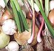

Onions

SAFARI
Users
- Weights & Measures
- Buying & Storing Onions
- Peeling, Cutting & Chopping
- Frying Onions
- Pearl Onions & Boiling Onions
- Oven Roasting Onions
Weights & Measures
Recipes should always specify the weight of onions "as purchased" presuming a standard amount of loss from peeling. The U.S. National Onion Association defines a medium onion to be 5 ounces. Onions that small are hard to find in Southern California onion bins, so I, and some other cooks, would prefer 6 ounces, which produces 1-cup chopped small. What recipe writers in England or Bangladesh consider a "medium onion", I haven't a clue, but in southern India shallots are often called "small onions".
| Size | Weight | Chopped | |
|---|---|---|---|
| Small | 4 oz - 5 oz | 1/2 cup | |
| Medium | 5 oz - 7 oz | 1 cup | |
| Large | 7 oz - 10 oz | 1-1/2 cup |
Buying & Storing Onions
Selection:
You will want several sizes of yellow onions to fit various recipes, and perhaps some other varieties: White, Red, Sweet, depending on the recipes you are working with (see Onions for details). When buying onions always press on the top right by the stem. If the onion is not firm there, it is starting to decay inside. Onions that have started to sprout should be discarded as the central layers will be depleted.Storage:
Yellow storage onions (the most common type) last around a month stored in cool dark place with good air circulation - a bin or mesh bag. Red and White onions will usually keep almost as long, but Sweet onions are much more perishable, figure on just a couple of weeks at best.Cut Storage:
Unused peeled and cut (but not sliced or chopped) onions can be kept in the fridge in a plastic bag for several days, but beyond that they are subject to mold and other forms of degradation.Peeling, Cutting & Chopping Onions

Tears
This is the big problem with cutting onions. When damaged, the cells of Onions release enzymes which combine with sulphur compounds to produce propanethiol S-oxide vapors. When these reach the moisture in your eyes they form Sulphuric Acid, which stings, causing increase in tear production to wash it away. Some onions are much worse than others, it depends on how much sulphur was in the soil they grew in. There are various techniques for reducing this effect, some practical, some not.
Knife:
It is very important to use a very thin, razor sharp knife to minimize damage to the onion cells. A thin Santoku (shown above) is ideal - better than a Nakiri because it has a point, which makes it possible to accurately prepare an onion for chopping (see below). You should have one anyway because it is the premier vegetable slicing knife - and it doesn't have to be endorsed by a celebrity chef and cost $200. For details on keeping it sharp see our Sharpening Knives page. With care you should need only to use a "fine" stone.Standing:
When cutting onions, keep your eyes as far from the cutting as possible.Clean:
Remove all onion debris and cut onion from in front of you right away and wipe the cutting board with a sponge now and then.Fan:
Blowing the vapors away from you is certainly effective.Swim Goggles:
This will certainly work. Some chefs report using a full snorkel mask when they cut a lot of onions.Refrigerate:
Cooling the onions slows the enzymes that cause the problem. Unfortunately, it requires an improbable degree of planning ahead - I certainly don't do it.Water:
Many sources suggest cutting onions under water. That would certainly work, but I have failed to think of any way that can actually be done, and especially done safely.
Peeling & Cutting
Note that some writers say to make one or more horizontal cuts through the onion. I find this dangerous, and entirely unneeded if you tilt the knife to cut inward as you work the sides. |
Disarming Chopped or Sliced Onions
Particularly for use as a condiment, you may wish to tame chopped or sliced onions. There are two methods. First is to soak them in cold water for 20 minutes or so, then drain completely. The other is to give them a quick dip in rapidly boiling water, then quench in cold water and drain.
Frying Onions
Frying is by far the most common method of preparing onions for a recipe. Frying onions takes close attention, because if you screw them up, the recipe is doomed from the start.
Most commonly, onions are fried until "translucent", at which stage they've lost their harsh bite and are somewhat soft - but before there is any browning. "Golden" is the next most common level, then "browned", and "dark browned", the least common and most difficult. Even a small amount of burning will impart a bitter taste to the recipe. Of course, a former girlfriend from Texas preferred a modest amount of burning because that's how her mother used to make them.
- Peel, slice, dice or chop as appropriate for the recipe. If you will be frying beyond "light golden", be sure you have peeled deep enough that all the onion has the same moisture content.
- Select a pan that is quite a bit larger than the burner, usually a multi-ply sauté pan or deep skillet. 2 quart and 3-1/2 quart sauté pans should be full wrap-around multi-ply because slab bottomed will have a very hot ring at the edge of the slab. This makes control of even browning difficult. A 5-1/2 quart is so much bigger than the burner that a slab bottom pan works fine (and is much more affordable). For details see our Stainless Steel & Multi-Ply page. Cast Iron cookware doesn't have so much of this problem and fries more evenly.
- Use the amount of oil specified in the recipe. It doesn't need to be a lot, but 1 Tablespoon is about minimum for a 3-1/2 quart sauté. More oil makes for easier control.
- A light sprinkle of Salt will help the onions fry evenly.
- Start on fairly high heat, and stir very often, turning away from the pan for only very short times, but don't stir continuously, let the onions rest a little between stirrings. In particular move onions at the edges toward the center, and vice versa, and scrape down the sides as onions stuck there will darken very rapidly. As the onions fry, keep turning the heat down. Once they start to color they should be on rather modest heat.
- For darker browning, you need very low heat and a lot of attention, because any burning can seriously affect your recipe results.
Very Even Medium or Dark Browning
This is particularly important for Onions or Shallots that are used as a garnish. This technique will also make it easy to fry onions very dark without so much risk of some burning.
- Peel the onion deep enough so all layers have the same moisture content.
- Slice or chop the onions to the size desired. Remember that the onion pieces will shrink quite a lot. Keep the size as uniform as possible.
- Spread them out on a hard surface to dry. Turn them now and then for even drying. About 6 hours will do.
- Fry them in fairly shallow oil, over rather low heat, stirring very often but not continuously.
- If your recipe calls for them to be crisp, don't try to fry them crisp, they should still be a bit flexible. They will crisp up as they cool.
- Drain on paper toweling.
Pearl Onions & Boiling Onions
Handling these like full size onions would be very tedious. They are almost always used whole. Commercial pearl onions aren't actually real pearl onions (see Pearl Onions), they're selected regular onion types grown under crowded conditions to keep them very small.
- Bring plenty of water to a rolling boil.
- Pour Onions into the boiling water over high heat. Don't overload the pan. Leave for about one minute, then fish them out and quench under cold water (easiest to toss them in a big bowl of cold water with the faucet running into it).
- With a razor sharp knife, cut a little off the stem end. Then peel the paper layers back over the root end.
- Cut off the absolute minimum from the root end - it's what holds the onions together while cooking.
Oven Roasting Onions
Onions may be oven roasted:
- whole unpeeled
- halved crosswise unpeeled and dressed on the cut side
- halved crosswise peeled and dressed on the cut side
- Peeled and cut into wedges.
For whole and half onions the oven is preheated to 425°F/220°C. For wedges or small half onions, the oven is preheated to 400°F/200°C.
Onions to be roasted are usually tumbled with some Olive Oil. Half onions are usually painted with Olive Oil on the cut side and often dressed with herbs or spices. Wedges are usually tumbled with an oil base dressing.
Onions can be placed on a baking sheet, oiled or not, but for easy clean-up, the sheet can be covered with foil, oiled or not. Roasting time will be about an hour for whole onions, depending on size. They are done when a sharp skewer finds them soft all the way through. Halved onions are usually roasted until lightly browned on the cut side.
Whole onions are often sliced in half after baking. Slice them lengthwise, not crosswise, with a very sharp thin knife.
Finished roasted onions are often dressed with balsamic vinegar or wine vinegar and olive oil, and perhaps a touch of salt. Herbs are also sometimes included.